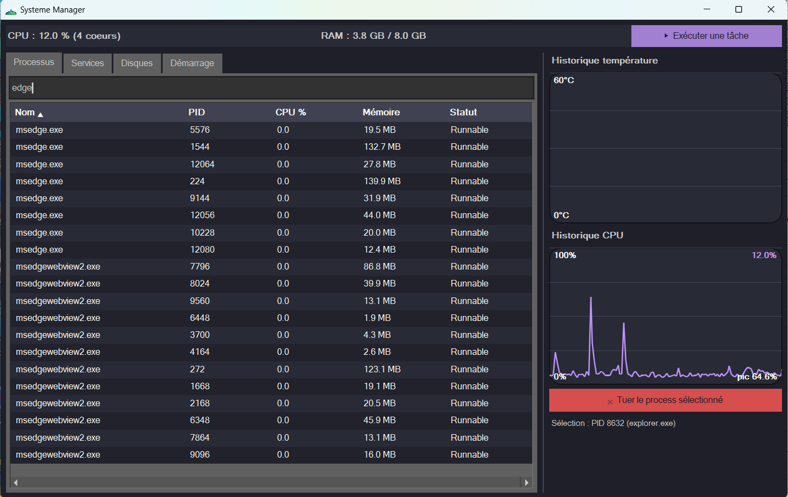

System Monitor VibeCoder
SystemMonitor — gestionnaire de tâches multiplateforme en Rust.
Un moniteur système inspiré du Task Manager, fonctionnant aussi bien sous Linux que Windows, même en session distante.
Processus détaillés
Services Linux / Windows
Disques & débit en temps réel
Démarrage automatique
Lanceur de tâches
Graphiques CPU & température
Thème sombre moderne
Linux & Windows
Téléchargements directs
Captures d’écran
